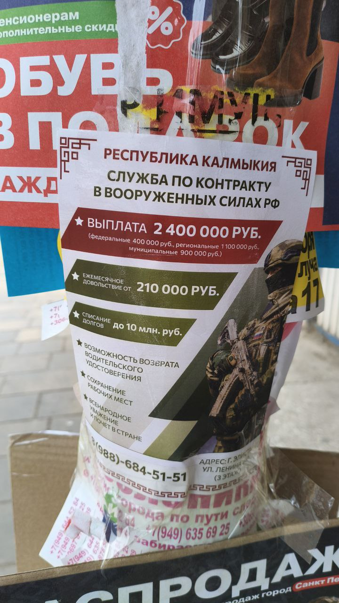
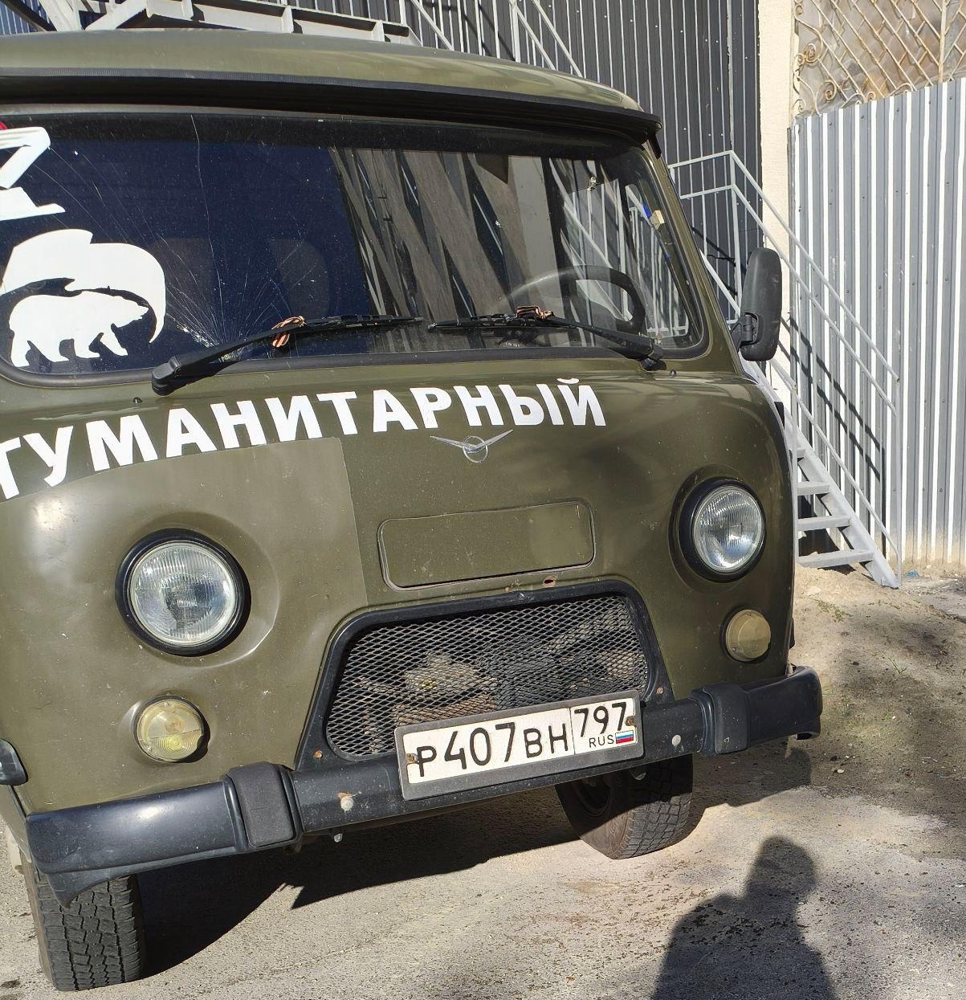
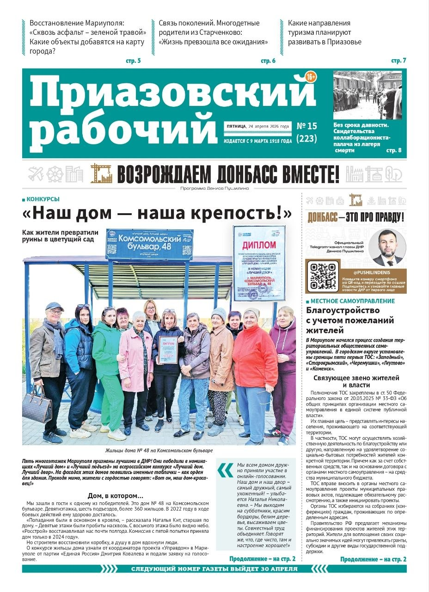

Field Documentation




Russia has constructed a comprehensive information architecture across Russian-occupied Ukrainian territories - state media, educational indoctrination, and militarised youth programming deployed to reshape identity, neutralise dissent, and manufacture consent for permanent occupation. TOT Insights documents the institutions, personnel, and mechanisms driving this system.


